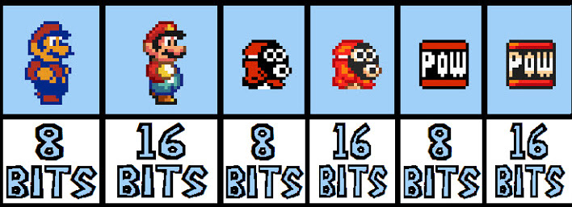
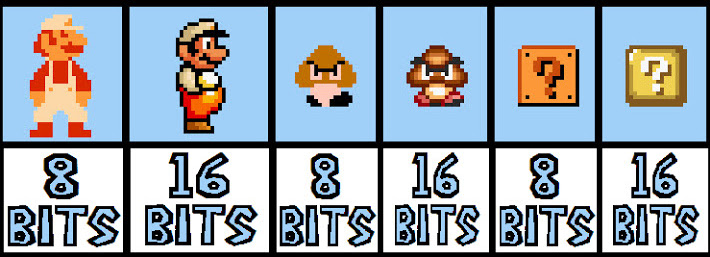

Que veut dire 16 bits ? Mais avant tout qu'est-ce qu'un bit ?
Un bit est une unité de mesure qui n'admet que DEUX valeurs : 0 ou 1.
Au niveau physique, 0 veut dire qu'il y a absence de signal et 1 veut dire qu'il y a présence de signal.
Quel est la différence entre 8 bits, 16 bits, 32 bits ?
Une machine qui possède beaucoup de bits, gagnera en rapidité. On pourrait apparenter les bits à des "boites" vide dans la mémoire qu'on pourrait remplir ou non.
Un jeu vidéo en 8 bits comporterais 2*8 = 256 boites, alors qu'un jeu en 16 bits offrirai 2*16 = 65 536 boites, ce qui est encore plus énorme et explique cette révolution dans les années 1990.
Une console 8 bits peut afficher 256 couleurs contre 65 536 pour une console 16 bits. C'est pourquoi cette évolution a offert une réelle persective d'innovation à cette époque.
Les sociétés de jeu vidéo vont alors tout faire pour tirer profit au maximum des performances des consoles et ainsi améliorer le jeu, les rendre plus coloré, plus rapide, à l'aide du nouveau système 16 bits.
Lien des articles :
- France Retrogaming
- Openclassrooms
- Comment ça marche